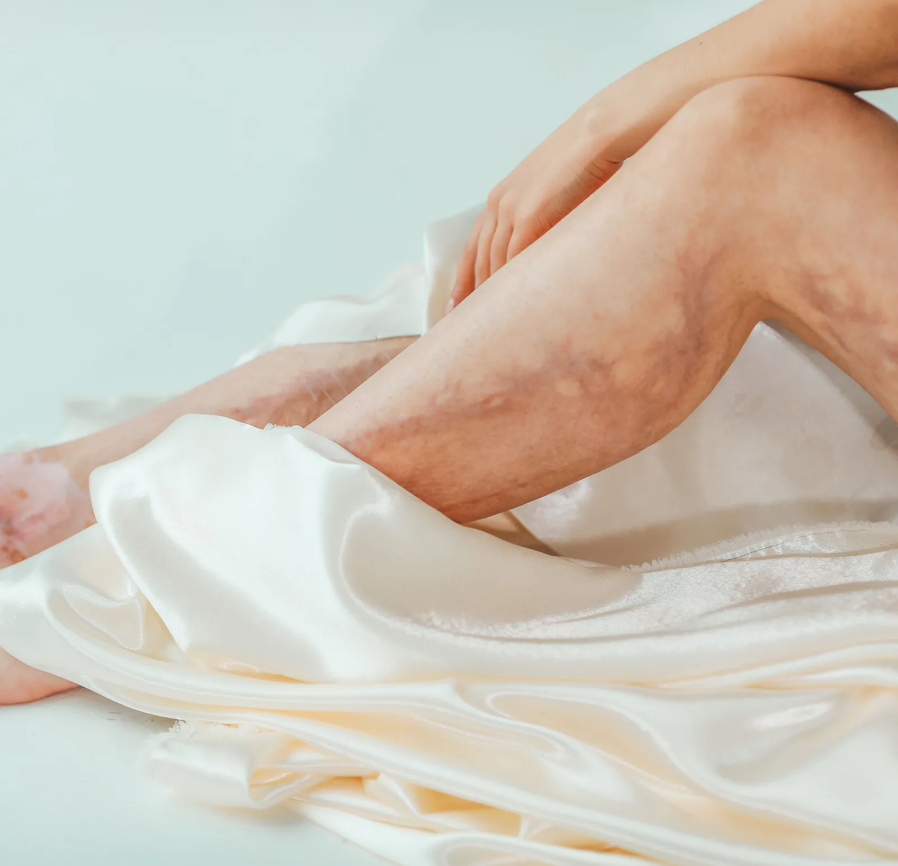

Piernas hinchadas por el calor: cómo cuidarlas si viajas de Medellín a tierra caliente
Armaste la maleta para ir a la costa o a cualquier plan de tierra caliente, y ya sospechas cómo van a terminar tus piernas: hinchadas, pesadas, con la marca de las sandalias en los tobillos. El calor y las horas de viaje se suman, y el resultado tiene una explicación concreta: no es casualidad ni cosa de tu cabeza.

Vives en Medellín, acostumbrada al clima de siempre: esos 20 y tantos grados que casi no cambian entre enero y diciembre. Tu cuerpo se acostumbra a esa temperatura estable, y por eso el salto a la costa, al Pacífico o a cualquier plan de tierra caliente te cuesta más de lo que imaginas: el combo de calor y horas de viaje sí le pasa factura a tus piernas, y la razón es más sencilla de lo que crees.
Piernas hinchadas por el calor y el viaje: qué le pasa a tu cuerpo
Dos mecanismos se juntan, y por eso el efecto se siente tanto. El primero es el calor: al subir la temperatura, el cuerpo dilata los vasos sanguíneos de la piel para liberar calor hacia afuera (vasodilatación), y eso deja escapar más líquido hacia los tejidos de las piernas. Como las piernas están lejos del corazón, les cuesta drenar ese líquido de vuelta.
El segundo mecanismo es la inmovilidad del propio viaje. Al caminar, los músculos de la pantorrilla se contraen y empujan la sangre de las venas hacia arriba, como una bomba. Horas sentada en el bus, el carro o el avión apagan esa bomba casi por completo, así que la sangre y el líquido se quedan estancados en la parte baja de las piernas. Súmale que en los viajes casi nadie toma suficiente agua, y la deshidratación empeora un poco más el cuadro.
De la montaña al mar: por qué el cambio de clima pesa tanto en Medellín
Aquí vivimos con un clima de montaña, templado casi todo el año, mientras la costa Caribe o el Pacífico colombiano manejan temperaturas mucho más altas y más humedad. Ese contraste explica, en parte, la hinchazón: el cuerpo acostumbrado a un clima templado no está entrenado para el calor intenso, y la vasodilatación se dispara con más fuerza los primeros días del viaje.
Por eso no es raro que la hinchazón sea peor justo al llegar, y que ceda un poco a medida que el cuerpo se adapta.
Qué hacer antes, durante y al llegar a tierra caliente
La buena noticia: casi todas las medidas son sencillas.
Y varias empiezan desde que armas la maleta.
Antes de salir de casa
- Separa con tiempo las medias de compresión que vas a usar en el viaje. Pruébatelas antes, no las estrenes el mismo día, para confirmar que la talla y el nivel de compresión te quedan bien.
- Si el trayecto va a ser largo, en bus, carro o avión, planea paradas o levantarte cada 1 a 2 horas.
- Evita la ropa ajustada en la cintura o la ingle para el día del viaje.
Durante el viaje
- Muévete: camina por el pasillo, flexiona los tobillos y contrae las pantorrillas varias veces por hora si estás sentada.
- Hidrátate con agua y modera el alcohol y la cafeína.
- Evita cruzar las piernas durante trayectos largos.
Ya en tierra caliente
- Enfría las piernas con agua fría o una ducha fresca al llegar.
- Eleva las piernas un rato por encima del nivel del corazón, sobre todo el primer día.
- Cuida la sal en las comidas de vacaciones: el exceso favorece que el cuerpo retenga más líquido.
- Sigue moviéndote. Caminar en la playa o dar una vuelta por el pueblo ayuda más que quedarte quieta bajo una sombrilla todo el día.
Nada de esto es complicado ni caro.
Las medias de compresión graduada ayudan a que la sangre regrese mejor desde las piernas, incluso con calor. Pero no son un escudo: no evitan toda la hinchazón, y no reemplazan que te muevas cada tanto durante el viaje.
En Seravena recomendamos probarte las medias con calma antes del viaje, nunca estrenarlas el mismo día, porque una media mal ajustada incomoda más de lo que ayuda y puede desanimarte a usarla el resto del trayecto.
Si lo que te preocupa es el viaje en sí, más allá del calor, te sirve nuestra guía de piernas en viajes largos: cómo cuidarlas en avión o carro. Y si el calor te hincha las piernas incluso sin viajar, en las semanas más calurosas del año aquí, revisa piernas hinchadas por calor: por qué pasa y cómo aliviarlas. Para sostener la circulación el resto del año, nuestros 7 hábitos para mejorar la circulación de piernas son un buen punto de partida.
Si notas que la hinchazón se repite cada vez que viajas a clima caliente, o si ya convives con várices y el calor te las dispara, una valoración de insuficiencia venosa en Medellín te ayuda a entender qué tanto influye tu circulación de fondo, más allá del viaje puntual.
Señales de alarma: cuándo no es solo el calor
La mayoría de las veces, la hinchazón del viaje y el calor es parecida en las dos piernas, blanda al tacto, y mejora con reposo, elevación y unos días de adaptación al clima. Pero hay señales que no debes dejar pasar, sobre todo después de un trayecto largo.
Si tu viaje es esta semana, el primer paso no es comprar nada nuevo: es sacar esta noche las medias que ya tienes, probártelas y confirmar que te quedan bien antes de que la maleta quede cerrada.
Si quieres revisar cómo está tu circulación antes de tu próximo viaje a tierra caliente, puedes agendar una valoración con nuestro equipo.
Preguntas frecuentes
¿Por qué se hinchan más las piernas cuando viajas de Medellín a tierra caliente?
Porque se juntan dos efectos: el calor dilata los vasos sanguíneos de la piel y deja escapar más líquido hacia los tejidos de las piernas, y las horas sentada en el bus, el carro o el avión apagan la bomba muscular de la pantorrilla que normalmente ayuda a que la sangre regrese al corazón. Si además vienes de un clima templado, el cuerpo no está acostumbrado a ese calor y la hinchazón puede sentirse más fuerte los primeros días.
¿Sirven las medias de compresión para viajar a la costa o a clima caliente?
Sí. Hay buena evidencia de que ayudan a que la sangre regrese mejor desde las piernas y reducen el riesgo de que se formen coágulos en viajes largos; sobre cuánto reducen la hinchazón en sí misma, la evidencia es más modesta, aunque muchas viajeras notan menos pesadez. Aun así, no sustituyen moverte durante el trayecto, y conviene probarlas antes del viaje para confirmar que la talla y el nivel de compresión te quedan bien.
¿Cuánto tarda en bajar la hinchazón de piernas después de un viaje a tierra caliente?
Depende de cada persona, pero si la hinchazón es leve, está en las dos piernas y mejora al elevarlas, moverte y tomar agua, suele ceder en pocos días, mientras el cuerpo se adapta al nuevo clima. Si no mejora o va en aumento, vale la pena pedir una valoración.
¿Cuándo la hinchazón de piernas después de un viaje es señal de alarma?
Si la hinchazón aparece de repente solo en una pierna, es intensa, y viene con dolor, calor local o enrojecimiento, puede tratarse de una trombosis venosa y debes buscar atención médica pronto. Si además sientes dificultad para respirar o dolor en el pecho, es una urgencia médica inmediata y debes acudir de inmediato a un servicio de urgencias.